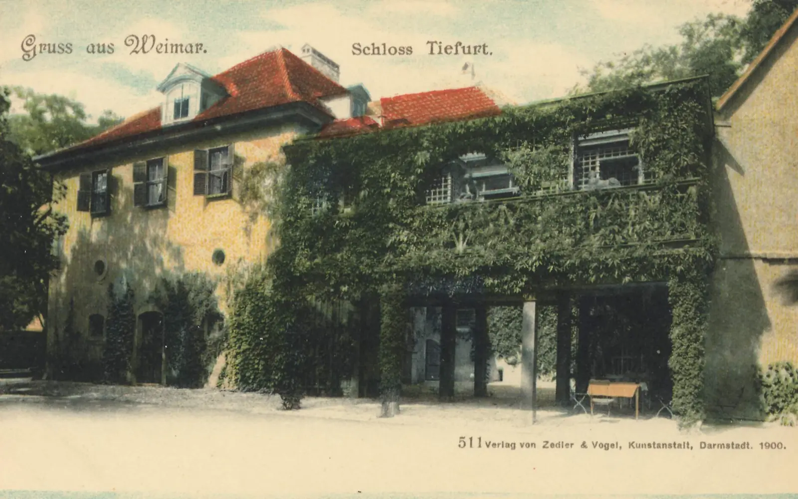
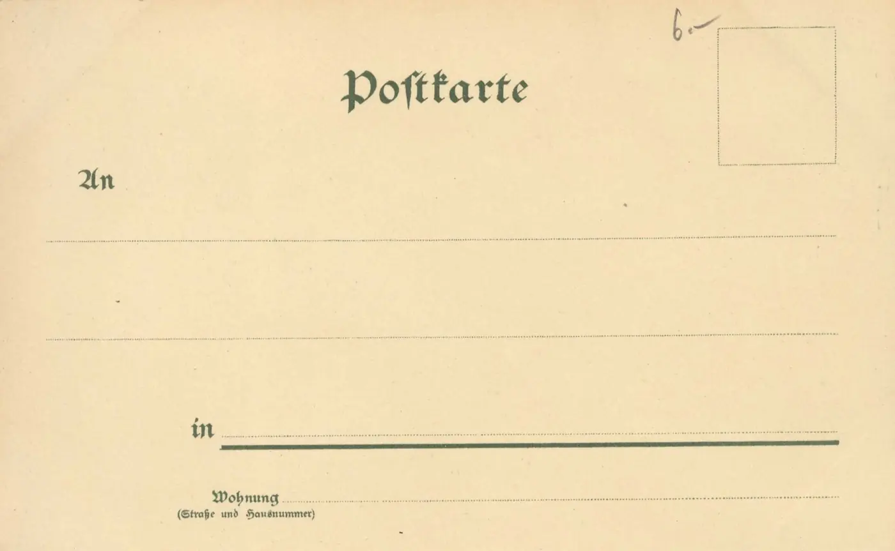

Schreiben Sie eine Karte
Eine Frage, eine Erinnerung, ein Foto, das ins Album gehört: Schreiben Sie eine Karte. Sie kommt direkt bei Ingrid Timpel an.



Lieber auf Papier?
Ingrid Timpel freut sich auch über einen Brief. Die Anschrift steht im Impressum.